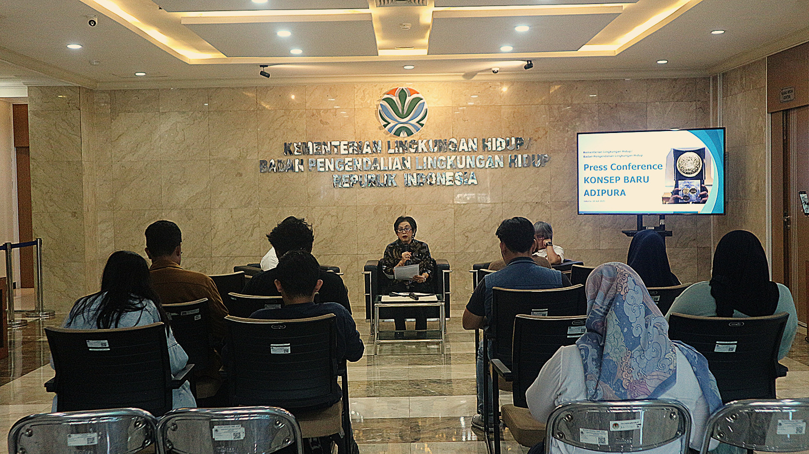

Adipura
Penghargaan bergengsi KLH/BPLH bagi kota/kabupaten atas keberhasilan menjaga kebersihan, pengelolaan sampah, dan kualitas lingkungan perkotaan — kini dengan konsep baru Adipura 8.0 yang lebih substansial, terukur, dan berorientasi jangka panjang.

Apa itu Adipura?
Adipura adalah penghargaan bergengsi dari Kementerian Lingkungan Hidup/Badan Pengendalian Lingkungan Hidup (KLH/BPLH) yang diberikan kepada kota/kabupaten di Indonesia atas keberhasilan dalam menjaga kebersihan, pengelolaan sampah, dan kualitas lingkungan perkotaan.
Program ini diluncurkan pada tahun 1986 oleh Presiden Soeharto melalui Kementerian Negara Lingkungan Hidup pada masa Menteri Lingkungan Hidup Prof. Dr. Emil Salim, sebagai bentuk apresiasi terhadap kota/kabupaten yang berhasil menjaga kebersihan dan lingkungannya.
Latar belakang Adipura 8.0 (2025)
Penilaian kinerja pengelolaan sampah pemerintah daerah adalah penilaian terhadap pencapaian pemerintah daerah dalam melakukan pengelolaan sampah secara kualitatif dan kuantitatif dalam periode satu tahun. Adipura menjadi instrumen insentif dan disinsentif melalui evaluasi dan pengukuran kinerja pemerintah daerah dalam menyelenggarakan pengelolaan sampah untuk mewujudkan kota bersih dan berkelanjutan.
Untuk mempercepat perbaikan pengelolaan sampah di daerah, Adipura memakai konsep baru dengan pendekatan yang lebih substansial, terukur, dan berorientasi jangka panjang. Adipura tidak lagi hanya mengejar tampilan fisik kota yang bersih sesaat, melainkan mendorong sistem pengelolaan lingkungan yang terintegrasi, berbasis data, perencanaan, dan partisipasi masyarakat.
Informasi lengkap pada laman resmi Adipura membuka situs lain.
Diluncurkan Presiden Soeharto melalui Kementerian Negara Lingkungan Hidup pada masa Menteri LH Prof. Dr. Emil Salim.
Lima tahun pertama berfokus mendorong kota menjadi "Kota Bersih dan Teduh".
Program sempat terhenti karena krisis ekonomi dan perubahan politik.
Dilanjutkan kembali dengan penekanan pada pengelolaan sampah, ruang terbuka hijau, dan partisipasi masyarakat.
Semakin menekankan sistem tata kelola lingkungan yang baik, bukan sekadar kebersihan fisik.
Adipura 8.0 — konsep baru: substansial, terukur, berbasis data digital, dan berorientasi jangka panjang.
Lima tahap penilaian Program Adipura
Pengumpulan Data Sekunder
Pengumpulan data kapasitas pengelolaan sampah kabupaten/kota berdasarkan data SIPSN.
Klarifikasi
Klarifikasi kota/kabupaten dilakukan sesuai kriteria yang tercantum dalam Peraturan Menteri.
Pemantauan
Memantau kebersihan & pengelolaan sampah (50%) — termasuk pengurangan sampah di sumbernya melalui pelibatan aktif masyarakat dan penanganan melalui fasilitas pengelolaan sampah — anggaran pengelolaan sampah (20%), serta SDM & fasilitas (30%).
Penilaian
Meliputi skala dan kriteria nilai serta bobot sebagaimana ditetapkan dalam SK MenLH No. 1418 Tahun 2025.
Penetapan
Menteri menetapkan kabupaten/kota penerima penghargaan Adipura Kencana, Adipura, Sertifikat Adipura, dan Predikat Kota Kotor.
Sebelum dinilai
- Tidak ada TPS liar.
- TPA minimal berupa controlled landfill.
Pemantauan menuju nilai lengkap 100%
Anggaran & Kebijakan 20%
- Perbandingan anggaran pengelolaan sampah terhadap APBD (40%).
- Kebijakan pengelolaan sampah: rencana pengelolaan sampah dan peraturan daerah (30%).
- Penguatan kelembagaan dalam ekonomi sirkular (30%).
SDM & Fasilitas 30%
- Ketersediaan SDM penyuluh lingkungan hidup (Pelhi), SDM terlatih, dan jumlah SDM pengelola sampah (50%).
- Ketersediaan sarpras pengelolaan sampah hulu–hilir, jumlah sampah terkelola di MRF, dan cakupan pelayanan pengangkutan (50%).
Kebersihan & Pengelolaan Sampah 50%
- Analisis fisik langsung di lapangan (100%).
Empat kriteria, dari tertinggi hingga terendah
Hasil penilaian menentukan kategori: Adipura Kencana (>85%), Adipura (75–85%), Sertifikat Adipura (60–74%), dan Predikat Kota Kotor (<60%).
Adipura Kencana >85%
- Kebijakan dan anggaran.
- SDM dan fasilitas pengelolaan sampah.
- Sistem pengelolaan sampah dan kebersihan.
- Tidak ada TPS liar.
Adipura 75–85%
- Kriteria pada dasarnya sama dengan Adipura Kencana: kebijakan & anggaran, SDM & fasilitas, sistem pengelolaan sampah & kebersihan.
- Tidak ada TPS liar.
Sertifikat Adipura 60–74%
Bagi kabupaten/kota yang belum dapat melengkapi data di atas:
- Adanya TPA controlled landfill.
- Pengelolaan sampah minimal 25%.
- Fasilitas pengelolaan sampah dan anggaran cukup.
- Tidak ada TPS liar/ilegal.
Predikat Kota Kotor <60%
Diberikan kepada kabupaten/kota dengan penilaian terendah dalam pengelolaan sampah dan kebersihan kota:
- Adanya TPS liar.
- TPA masih bersifat open dumping.
- Tidak ada fasilitas pengelolaan sampah.
- Pengelolaan sampah kurang dari 25%.
Penyampaian data penilaian
Pemerintah daerah menyampaikan tiga kelompok data melalui tautan resmi berikut.
Data Anggaran & Kebijakan
- RIPS (kolom AT–AY).
- Anggaran (kolom AZ–BD).
- Kelembagaan & tata kelola (kolom BE–BG).
- Perda pengelolaan sampah (kolom BK–BO).
Data SDM & Fasilitas
- Data umum SDM melalui formulir tersendiri.
- Data fasilitas: pengisian kolom Penanganan Sampah (kolom U–AL).
Submit data SDM membuka formulir
Submit penilaian fasilitas membuka formulir
Data Capaian Kinerja
- Penilaian capaian kinerja pengelolaan sampah daerah.
- Tersedia contoh tampilan untuk 19 titik lokasi yang dinilai.
Submit data capaian kinerja membuka formulir
Lihat contoh tampilan penilaian membuka dokumen
Kriteria lebih sederhana, sistem lebih akurat
Pada 2025, kriteria penilaian disederhanakan dari 291 kriteria (kebersihan, pengelolaan sampah, pemanfaatan sampah, keteduhan & penghijauan, kondisi gulma & sedimen) menjadi 88 kriteria — simplifikasi metode tanpa mengurangi substansi parameter kunci, penguatan korelasi antara pengelolaan sampah dan kebersihan, serta sistem penilaian yang mudah digunakan tim pemantau lapangan dengan latar keilmuan yang bervariasi.
Berbasis Digital
- Efisiensi proses penilaian — mengurangi waktu dan biaya dibanding sistem manual.
- Kemudahan akses & transparansi — hasil dapat diakses pusat, daerah, dan masyarakat.
- Integrasi antar sistem Waste Crisis Center, SIMPEL, dan SIPSN untuk analisis lintas sektor.
- Jejak audit digital — semua aktivitas penilaian terekam otomatis.
Real-time Data
- Pemantauan langsung tanpa menunggu laporan manual.
- Respons cepat bila ditemukan anomali atau penurunan kualitas kebersihan.
- Kinerja daerah lebih terukur — perubahan di lapangan langsung tercermin, mendorong konsistensi kinerja, bukan hanya menjelang penilaian.
Akurasi & Validasi
- Mengurangi subjektivitas — data digital berupa foto dan GPS lebih objektif.
- Standardisasi indikator — konsisten antar evaluator, menghindari bias.
- Kredibilitas hasil meningkat berkat data sah dan tervalidasi.
- Pengambilan kebijakan lebih tepat dan akuntabilitas publik meningkat.
Sumber: kemenlh.go.id — Adipura
Wujudkan kota bersih dan berkelanjutan
Lengkapi data pengelolaan sampah daerah Anda dan ikuti penilaian Adipura 8.0 yang terukur dan transparan.